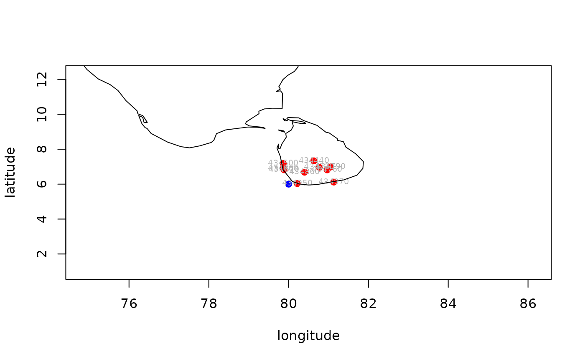

R/nearest_stations_noaa.R
nearest_stations_noaa.RdReturns a data frame of meteorological stations with their coordinates and distance from a given location based on the noaa website. The returned list is valid only for a given day.
nearest_stations_noaa(
country,
date = Sys.Date(),
add_map = TRUE,
point = NULL,
no_of_stations = 10,
allow_failure = TRUE
)country name (e.g., "SRI LANKA"). Single entries allowed only.
optionally, a day when measurements were done in all available locations; current Sys.Date used by default
logical - whether to draw a map for a returned data frame (requires maps/mapdata packages)
a vector of two coordinates (longitude, latitude) for a point we want to find nearest stations to (e.g. c(80, 6)). If not provided the query will be based on a mean longitude and latitude among available dataset.
how many nearest stations will be returned from the given geographical coordinates; default 30
logical - whether to allow or stop on failure. By default set to TRUE. For debugging purposes change to FALSE
A data.frame with number of nearest station according to given point columns describing stations parameters
(e.g. ID station, distance from point, geographic coordinates, etc.) where each row represent a measurement,
each station which has a measurements on selected date. If add_map = TRUE additional map of downloaded data is added.
# \donttest{
nearest_stations_noaa(country = "SRI LANKA",
point = c(80, 6),
add_map = TRUE,
no_of_stations = 10)
#> [1] "https://www1.ncdc.noaa.gov/pub/data/noaa/country-list.txt"
#> /tmp/RtmpcOzvAb/file1811b19ce27

#> CTRY countries USAF WBAN STATION.NAME STATE ICAO LAT
#> 6053 CE SRI LANKA 434950 99999 GALLE 6.033
#> 6038 CE SRI LANKA 434860 99999 RATNAPURA 6.683
#> 6046 CE SRI LANKA 434670 99999 COLOMBO RATMALANA VCCC 6.822
#> 6049 CE SRI LANKA 434660 99999 COLOMBO 6.900
#> 6034 CE SRI LANKA 434970 99999 HAMBANTOTA VCRI 6.117
#> 6036 CE SRI LANKA 434500 99999 BANDARANAIKE INTL COLOMBO VCBI 7.181
#> 6044 CE SRI LANKA 434730 99999 NUWARA ELIYA 6.967
#> 6055 CE SRI LANKA 434760 99999 DIYATALAWA 6.817
#> 6051 CE SRI LANKA 434790 99999 BADULLA 6.983
#> 6039 CE SRI LANKA 434440 99999 KANDY 7.333
#> LON ELEV.M. BEGIN END Begin_date End_date distance
#> 6053 80.217 13.0 20020116 20221009 2002-01-16 2022-10-09 24.62659
#> 6038 80.400 88.0 20020116 20221009 2002-01-16 2022-10-09 88.80485
#> 6046 79.886 6.7 19440513 20221009 1944-05-13 2022-10-09 93.10837
#> 6049 79.867 7.0 19440101 20221009 1944-01-01 2022-10-09 102.07363
#> 6034 81.133 20.0 19450801 20221009 1945-08-01 2022-10-09 127.79482
#> 6036 79.866 8.8 19620101 20221009 1962-01-01 2022-10-09 133.35446
#> 6044 80.767 1880.0 19570701 20221009 1957-07-01 2022-10-09 138.47897
#> 6055 80.967 1250.0 20050714 20221009 2005-07-14 2022-10-09 142.03310
#> 6051 81.050 667.0 20030112 20221009 2003-01-12 2022-10-09 161.37568
#> 6039 80.633 477.0 20030111 20221009 2003-01-11 2022-10-09 165.56435
uk_stations = nearest_stations_noaa(country = "UNITED KINGDOM", no_of_stations = 100)
#> The point argument should have two coordinates.
#> We will provide nearest stations for mean location.
#> To change it please change the `point` argument c(LON,LAT)
#> [1] "https://www1.ncdc.noaa.gov/pub/data/noaa/country-list.txt"
#> /tmp/RtmpcOzvAb/file1813e4c4f6
# }